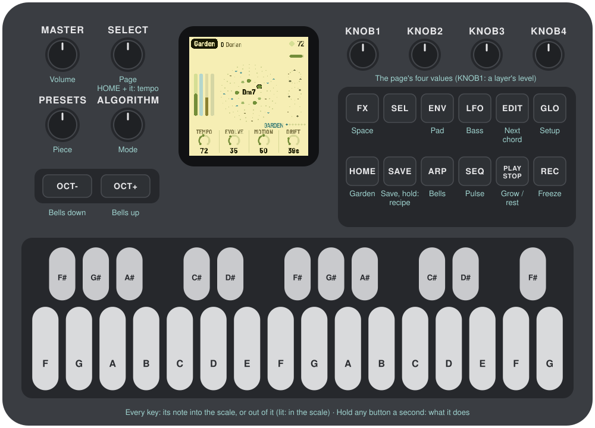
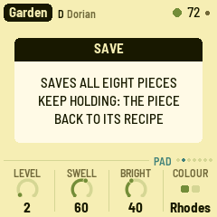
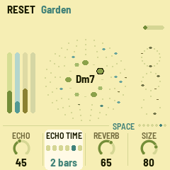
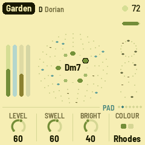
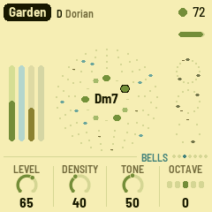
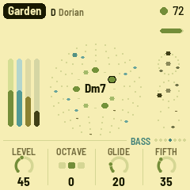
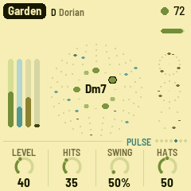
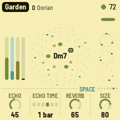
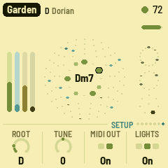

Manual
AMB-1 turns the M-VAVE FM-1 into a generative ambient machine, inspired by Brian Eno's Music for Airports. It plays itself from the moment it's switched on: breathing voices, soft bells on tape loops of unequal length, a gliding bass and quiet Euclidean percussion, all through a short echo, a long tape loop and a plate reverb. You don't perform it, you tend it: pick a piece and a scale, take notes out, put them back, and let it grow.

1Install
Try it first: the AMB-1 emulator runs the same code in the browser, with sound, played with the mouse, a touch screen or the keyboard.
Install: open the web installer in Chrome or Edge, connect the FM-1 with a USB data cable and press Install. Don't unplug it while it's writing; when it finishes, the FM-1 restarts into AMB-1.
Go back: "Back to the stock firmware", at the bottom of the same page, puts M-VAVE's firmware back (download the FM-1 V15 file from the link there, choose it, press the button). M-VAVE's own updater, M-UPGRADE, works too.
Installing other firmware is at your own risk. If the FM-1 ever won't start, see Recovering an FM-1 that won't start.
Install from the command line
Download the firmware file (for example amb-1.0.fwsc) from the releases page, get the AMB-1 source from GitHub (git clone --recursive https://github.com/charlesvestal/fm1-amb), install Python 3 with pip3 install mido python-rtmidi, and run:
python3 base/tools/fm1_install.py amb-1.0.fwsc2Getting started
AMB-1 starts playing as soon as it's on. A few minutes with it:
- Listen. The first piece, Garden, is playing: D Dorian, pad, bells, bass and a soft pulse. Turn MASTER for the volume.
- Try another piece. Turn PRESETS. Each of the eight pieces has its own key, tempo, sounds and amount of movement.
- Change the scale. Press a key whose note is lit: it leaves the scale, and nothing plays it any more. Press it again to bring it back. Any key that isn't lit adds its note.
- Move on. Press EDIT: the pad moves to the next chord at the start of the next bar.
- Freeze. Press REC: the chord holds and the reverb rings on forever, while the bells and pulse go on above it. Press REC again to let it go.
- Shape a layer. Each layer has a button: ENV the pad, ARP the bells, LFO the bass, SEQ the pulse, FX the space, HOME the garden as a whole, GLO the setup. KNOB 1–4 set the four values at the bottom of the screen, a layer's level always on KNOB 1. SELECT steps through the pages.
- Rest. Press PLAY: the garden stops growing and its sounds fade out slowly. PLAY again and it grows back.
What you change is kept with the piece. AMB-1 saves it by itself while resting, or press SAVE.
Not sure what a button does? Hold it for a second: a card says. Let go and nothing happens.
3Controls
The drawing at the top shows them all; here they are in more detail.
| Control | What it does |
|---|---|
| Keys | The scale. Each key adds its note to the scale or takes it out; the keys light up for the notes in it. Every octave of a note is the same key. The root stays, and the scale keeps at least three notes. |
| PLAY | Grow / rest. AMB-1 starts growing by itself when it's switched on. At rest, the sounds fade out slowly and the reverb rings away. Lit green while growing. |
| REC | Freeze: the chord holds and the reverb rings on forever, while the bells and pulse go on dry above it. Press again to thaw. Lit while frozen. |
| EDIT | The next chord, at the start of the next bar (at once while resting). |
| HOME | The Garden page: the whole garden. |
| ENV · ARP · LFO · SEQ | The layers' pages: Pad, Bells, Bass, Pulse. |
| FX · GLO | The Space and Setup pages. The lit button shows the page. |
| SELECT | The previous or next page. Hold HOME and turn it for the tempo, from any page. |
| ALGORITHM | Mode: Ionian, Dorian, Phrygian, Lydian, Mixolydian, Aeolian, pentatonic major and minor. Loads the mode's scale; editing it with the keys makes it Custom. |
| PRESETS | The piece (see The pieces). |
| KNOB 1–4 | The four values on the screen. A few clicks are always single steps; a quick turn speeds up, so half a turn sweeps the range. |
| OCT− / OCT+ | The bells' octave, two down to two up, from any page. |
| MASTER | Volume. |
| SAVE | Saves all eight pieces. Held for 1.5 s: puts the piece back to its recipe. |
Help: hold any button but PLAY for a second and a card says what it does. A key, a knob or another button puts the card away; letting go after it does nothing else.

4The screen


- Top line: the piece, its root and mode. On the right, a slow beat light (a play triangle while resting), the tempo (EXT when it follows MIDI clock) and a dot when there are unsaved changes. Messages ("ADDED F#", "NEXT CHORD") show here for a moment.
- Top right of the garden: a thin bar fills up on the way to the next chord; while frozen it says "held".
- The ring: the twelve notes, C at the top. Notes in the scale are green, the chord's notes a deeper green, the root is ringed in ink. The chord's name is in the middle.
- Around it: the four bell loops, 13, 17, 23 and 29 beats, from the inside out. Each dot is a beat; the blue ones hold a note. A playhead goes round each loop and glows when it rings a bell.
- Left: the four layers' levels as they sound: pad (green), bells (blue), bass (olive), pulse (dark).
- Right: the three pulse rings: thump (16 steps), closed hat (12) and open hat (7). Hits fade while the pulse sits a few bars out.
- Bottom: the page's name and seven dots, one a page, then its four values, one for each knob: a dial (or, for a switch, its positions) and the value. The one you're turning lights up.

5The garden
AMB-1 grows four layers from one scale and one chord.
- Pad: four breathing voices. Each swells in, hangs and fades on its own cycle (unequal lengths, around 11 to 19 seconds at first, as in the tape loops of "2/1"), taking its note of the chord as it starts, so the chord forms and dissolves instead of sitting there. Two colours: a filtered Rhodes that blooms brighter as it swells, or sung voices. Every so often (Drift) the chord moves to another one in the scale. Voices on notes the new chord shares hold to the end of their breath; the others fade out and breathe in again on their new notes.
- Bells: FM bells, soft-struck like a piano slowed to half speed, played by four tape loops 13, 17, 23 and 29 beats long. Each loop holds a few notes, so the loops slide against each other and the melody never quite repeats. Each loop is its own shade of bell, and now and then a note rings with its octave.
- Bass: the chord's root, low and soft, gliding; sometimes it leans on the fifth.
- Pulse: a soft thump tuned to the chord's root, a closed hi-hat and an open one, each on its own Euclidean pattern over 16, 12 and 7 sixteenths: polyrhythms. The patterns slowly turn and gain or lose a hit.
Then the space, after Eno's chain for Discreet Music: a short tape echo, a long tape loop (up to 5.6 seconds, with two heads, each repeat coming back darker and thinner) and a plate reverb. They're most of what you hear. The echo is stereo, and it evolves: with Motion up, its two heads wander across the field, the repeats fall in changing patterns, and now and then the second head slides to another part of the loop, bending the repeats a little as it goes.
Over it all:
- The arc: a slow tide, a few minutes from end to end, between sparse (fewer bells, a darker pad, a quieter pulse, more reverb) and full. Motion sets how far it swings, and how far the smaller things wander: pitch, pan, the vowel, the echo's heads.
- Rests: with Evolve up, the layers take breaths: the pulse sits out two to four bars, the bass skips a chord, a bell loop goes quiet for a pass.
6The pieces
PRESETS chooses one of eight pieces. Each is a recipe for the whole garden: the layers, the sounds, tempo, key and mode, how busy it is and how far it moves. Each remembers how you left it. Hold SAVE for 1.5 s to put the piece you're on back to its recipe. Tune, MIDI out and Lights are the same for all.
| Piece | What it is |
|---|---|
| Garden | D Dorian, 72: everything, gently. Rhodes. |
| Departures | C# Ionian, 60: soft, slowed-piano bells an octave down over a quiet Rhodes, as "1/1". |
| Voices | F Aeolian, 56: only the sung voices on unequal loops and a low bass, as "2/1". |
| Afternoon | G Lydian, 84: a bright Rhodes, busier bells, a light pulse. |
| Night Bus | A Aeolian, 96: the pulse forward, metallic bells, short echoes. |
| Shoreline | E pentatonic major, 64: dark, round bells lost in long echoes, as "2/2". |
| Glass | Eb pentatonic minor, 76: clangy bells an octave up, dense. |
| Tides | Bb Mixolydian, 70: sung voices, the most changeable (Evolve and Motion high). |
7The pages
One page a layer, each on its own button, with four values on KNOB 1–4. A layer's level is always KNOB 1. SELECT steps through them in this order.
HOME: Garden
- Tempo: 30 to 120 (also HOME + SELECT, from any page).
- Evolve: how restless the garden is. At 0 the loops repeat exactly. Turned up, a bell note now and then changes or moves at the end of a pass, the pulse patterns turn and gain or lose a hit, and the layers take rests.
- Motion: how far the arc swings, and how much pitch, pan, the vowel and the echo wander (at 0 the echo stays put: one head left, one right).
- Drift: how long a chord lasts before the pad moves on, 20 seconds to 5 minutes (each time a little more or less). EDIT moves on now.
ENV: Pad

- Level.
- Swell: how long the voices breathe, from a few seconds to about half a minute.
- Bright: opens the pad's filter and brightens the Rhodes; for the Voices it also moves the vowel from "oo" to "eh".
- Colour: Rhodes or Voices. Each piece keeps its own.
ARP: Bells

- Level.
- Density: how many notes each loop holds, none at 0 to five at the top. A change shows up as each loop comes round.
- Tone: from round and soft-struck to a long metallic clang.
- Octave: two down to two up (OCT− and OCT+ too).
LFO: Bass

- Level.
- Octave: one down, home, or one up.
- Glide: how slowly the bass slides to its next note, from a quick step to over a second.
- Fifth: how often, halfway through a chord, the bass leans on the fifth.
SEQ: Pulse

- Level.
- Hits: how many beats the three rings play. 0: no pulse.
- Swing: the off sixteenths later, from straight (50%) to a heavy lilt (75%).
- Hats: from dark and long to bright and crisp.
FX: Space

- Echo: how much goes to the echoes.
- Echo time: the tape loop's length: a dotted quarter, a half, a dotted half, 1, 2 or 4 bars, shortened to fit its 5.6 seconds at slow tempos. The second head repeats at three quarters of it, or with Motion up, at two thirds, five eighths, a half or three eighths.
- Reverb: how much goes to the plate.
- Size: how long the plate rings, from a room to a long hall, and how many times the echo comes back.
GLO: Setup

- Root: the key's root note. The scale moves with it.
- Tune: fine tuning, ±50 cents.
- MIDI out: on or off.
- Lights: On: the keys light the scale, and the unlit buttons glow dimly so they can be read on the black FM-1. Keys: the key lights only. Off.
The top right of this page shows how much of the FM-1's time the sound takes (CPU).
8MIDI
MIDI comes in over USB and the TRS jack, and goes out over USB.
- In, channel 1: a note adds or removes its note from the scale, like a key.
- In, clock: the beat follows MIDI clock, and start / stop start and stop the garden. The screen shows EXT for the tempo.
- Out (on by default): the pad on channel 1, the bells on 2, the bass on 3 and the pulse on 10, and clock with start / stop when AMB-1 runs on its own tempo. Turning MIDI out off sends all notes off.
Screen reader
AMB-1 can tell a screen reader what its screen shows. Connect the FM-1 by USB, open the FM-1 Screen Reader in Chrome or Edge, and click Connect. It reads out the page you're on and its knobs, a knob's value as you turn it, the piece and its key, the notes you add or take out, help cards, every message, and the chord each time the garden moves on, in words: "E flat pentatonic minor", not "Eb Pent min".
The page can speak with its own voice or pass everything to your own screen reader (VoiceOver, NVDA, JAWS, TalkBack). Press W to hear the whole screen again: the page, the piece, the chord and the scale. The FM-1 says nothing until the page connects, so a DAW on the same cable never sees it.
9Saving
AMB-1 keeps all eight pieces in the FM-1's memory, each as you left it: the knobs, the scale, the tempo, the pad's colour and the bells' octave, plus Tune, MIDI out and Lights.
- By itself: a few seconds after a change, but only while resting. Writing to the memory interrupts the sound for a moment, so it never happens while the garden grows. A dot at the top of the screen means there are unsaved changes.
- SAVE: saves now, playing or not.
- Hold SAVE for 1.5 s: the piece goes back to its recipe. That isn't saved until the next save, so switching off before then brings your version back.
10Troubleshooting
Update mode: hold OCT- and OCT+ together for five seconds. A countdown appears; let go before it ends to cancel.
Calibration: if a button or knob does the wrong thing, hold OCT- and OCT+ while you switch the FM-1 on. The screen then asks you to press each button and turn each knob in turn.
After a crash: AMB-1 shows a red CRASH screen and restarts by itself a few seconds later. The next start shows RESTARTED AFTER A CRASH and an address (PC ...) for a moment. If you report the problem, include that address and what you were doing.
Safe mode: if AMB-1 crashes twice in a row while starting, it starts in SAFE MODE instead. There's no sound, but USB works, so the web installer can reach it: reinstall AMB-1, or put the stock firmware back from the same page. Press PLAY to try starting AMB-1 normally again. If even safe mode fails twice, the FM-1 drops into the chip's own update mode, and only the rescue below can reach it.
Recovering an FM-1 that won't start
An FM-1 in the chip's own update mode shows a blank screen, and neither the web installer nor M-VAVE's updater can see it. A script can put M-VAVE's firmware back, on a Mac, with the USB cable you already have.
Open Terminal, paste this line and press Return:
bash -c "$(curl -fsSL https://raw.githubusercontent.com/hugelton/felucca-bsp/main/tools/fm1_rescue.sh)"- If a window asks to install the command line developer tools, click Install. When it has finished, paste the line again.
- If it asks for a password, type your Mac password (nothing shows as you type) and press Return.
- When it says it's waiting, plug the FM-1 in and switch it on. The script catches it, checks the chip, saves a backup of the FM-1's memory in the
fm1-rescuefolder in your home folder, and asks before it writes anything. - Type yes and press Return. Don't unplug anything until it says it's restarting the FM-1. The FM-1 then starts into its original firmware, and you can install AMB-1 again from there.
The script downloads M-VAVE's FM-1 V15 firmware and JieLi's flash loader, and checks both against known fingerprints. It writes only the firmware area of the memory, never the bootloader or the FM-1's own settings, and checks everything it writes. Running it again is always safe. If it fails, copy everything in the Terminal window and open an issue. If the FM-1 never shows up at all, Felucca's FM-1-transporter (a small RP2040 board wired to the USB lines) can still reach it.
11Parameters
The defaults are Garden's; each piece has its own.
| Page | Value | Range | Garden |
|---|---|---|---|
| Garden | Tempo | 30–120 | 72 |
| Garden | Evolve | 0–100 | 35 |
| Garden | Motion | 0–100 | 50 |
| Garden | Drift | 20 s – 5:00 | 25 (about 40 s) |
| Pad | Level | 0–100 | 60 |
| Pad | Swell | 0–100 | 60 |
| Pad | Bright | 0–100 | 40 |
| Pad | Colour | Rhodes, Voices | Rhodes |
| Bells | Level | 0–100 | 65 |
| Bells | Density | 0–100 (0 to 5 notes a loop) | 40 |
| Bells | Tone | 0–100 | 50 |
| Bells | Octave | −2 – +2 | 0 |
| Bass | Level | 0–100 | 45 |
| Bass | Octave | −1 – +1 | 0 |
| Bass | Glide | 0–100 (20 ms – 1.2 s) | 20 |
| Bass | Fifth | 0–100 | 35 |
| Pulse | Level | 0–100 | 40 |
| Pulse | Hits | 0–100 | 35 |
| Pulse | Swing | 50%–75% | 50% |
| Pulse | Hats | 0–100 | 50 |
| Space | Echo | 0–100 | 45 |
| Space | Echo time | 1/4., 1/2, 1/2., 1 bar, 2 bars, 4 bars | 1 bar |
| Space | Reverb | 0–100 | 65 |
| Space | Size | 0–100 | 80 |
| Setup | Root | C – B | D |
| Setup | Tune | −50 – +50 cents | 0 |
| Setup | MIDI out | Off, On | On |
| Setup | Lights | Off, On, Keys | On |
| ALGORITHM | Mode | 8 modes, or Custom | Dorian |
12Credits
AMB-1 is free software under the GNU General Public License, version 3. If you share the firmware, you must also share its source code.
- The idea comes from Brian Eno's generative music: Music for Airports' tape loops of unequal length, and the echo and tape-delay chain of Discreet Music.
- The reverb is Jon Dattorro's plate ("Effect Design, Part 1", JAES 1997), by way of FoMni-1.
- The Euclidean rhythms are Godfried Toussaint's reading of Bjorklund's algorithm.
- The platform (hardware layer, USB, update loader, installer and storage) is fm1-base and felucca-bsp, from Felucca by Leo Kuroshita, Hügelton Instruments.
- The idea of running FM-1 firmware in the browser comes from Groove OS.
- The fonts are Barlow Semi Condensed and Terminus (SIL Open Font License).
M-VAVE and FM-1 are trademarks of their owners. AMB-1 is not connected with M-VAVE, Brian Eno or Hügelton Instruments.